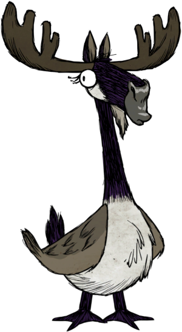

Moose/Goose

Moose/Goose is the second station boss who apears during spring in his nest, you can summon him by hitting one of the little ducks, he has 6000hp , deals 75 damage  for players and 150 damage
for players and 150 damage  for mobs
for mobs
Kiting pattern
Phase 1:
Attack 1: bait, 3 attacks, back, 3 attacks, back, 3 attacks, back, 3 attacks, bait
Safe kiting pattern
Phase 1:
Attack 1: bait, 2 attacks, back, 2 attacks, back, 2 attacks, back, 2 attacks, bait
Full gameplay loop
Explanation
Moose/Goose is a simple boss to kite, he will always do 4 normal atacks and a scream that will throw your weapon away, simply just pick it up again and continue to kite in the same way until he is defeated, note that after he is dead his little ducks will atack you, but since this is a only boss guide, it will not be show here
Tanking Strategy
Itens required
2x 1x
1x
Full Gameplay loop
Explanation
Moose/Goose is a good boss to tank but you have to keep in mind that after 4 normal attacks he is going to scream and throw you weapon away, that's why in that moment you have to click in your weapon to take off of your inventory weapon slot, and after he finishes screaming you click again to put it in your inventory weapon slot